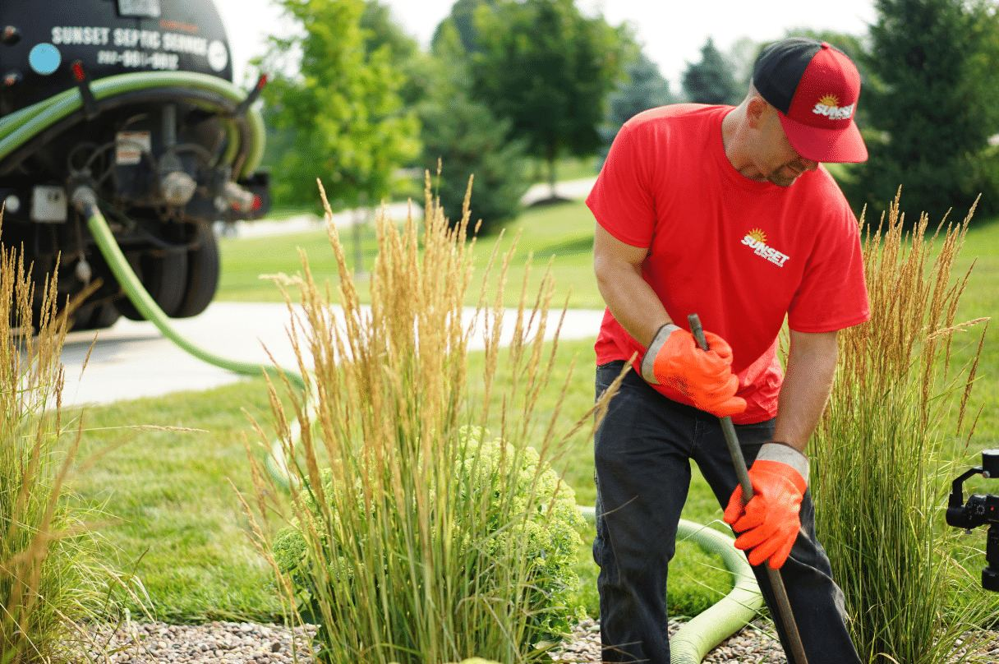

Friendly · Efficient · Clean
Residential
Home septic problems are the specialty — pumping, cleaning, repairs and maintenance for systems of all types.
- Full tank pumping
- Replace baffles & unplug lines
- Float switches & pumps